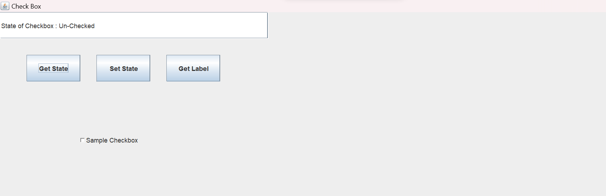

Delegation-event-model
7. Java Program to Get and Set State and Get Label of a Check Box
Code
import javax.swing.*;
import java.awt.*;
import java.awt.event.*;
class Check_Box implements ActionListener
{
static JTextField text;
static Checkbox checkbox;
public static void main(String args[])
{
//Create a frame
JFrame frame=new JFrame("Check Box");
frame.setSize(500,500);
frame.setBackground(Color.white);
frame.setLayout(null);
frame.setDefaultCloseOperation(JFrame.EXIT_ON_CLOSE);
text=new JTextField();
text.setBounds(0,0,500,50);
frame.add(text);
JButton get_st=new JButton("Get State");
JButton set_st=new JButton("Set State");
JButton get_lb=new JButton("Get Label");
get_st.setBounds(50,80,100,50);
set_st.setBounds(180,80,100,50);
get_lb.setBounds(310,80,100,50);
frame.add(get_st);
frame.add(set_st);
frame.add(get_lb);
Check_Box obj=new Check_Box();
get_st.addActionListener(obj);
set_st.addActionListener(obj);
get_lb.addActionListener(obj);
checkbox=new Checkbox("Sample Checkbox");
checkbox.setBounds(150,200,200,80);
frame.add(checkbox);
//Display the frame
frame.setVisible(true);
}
public void actionPerformed(ActionEvent e)
{
String option=e.getActionCommand();
if(option.equals("Get State"))
get_State();
else if(option.equals("Set State"))
set_State();
else
get_Label();
}
public void get_State()
{
boolean state=checkbox.getState();
if(state==true)
text.setText("State of Checkbox : Checked");
else
text.setText("State of Checkbox : Un-Checked");
}
public void set_State()
{
text.setText("State of Checkbox changed from ");
boolean state=checkbox.getState();
if(state==true)
{
checkbox.setState(false);
text.setText(text.getText()+"Checked to Un-Checked");
}
else
{
checkbox.setState(true);
text.setText(text.getText()+"Un-Checked to Checked");
}
}
public void get_Label()
{
text.setText("Label of the checkbox is : ");
text.setText(text.getText()+checkbox.getLabel());
}
}
Output
